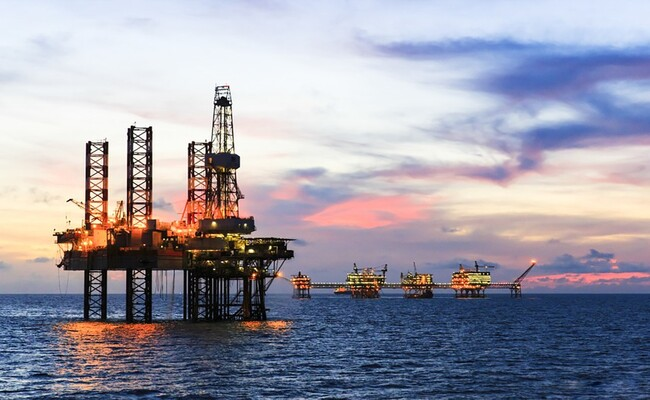
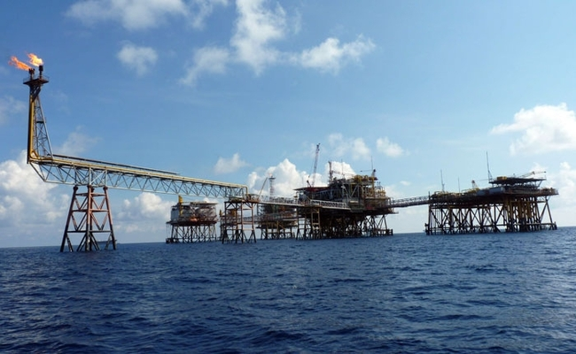
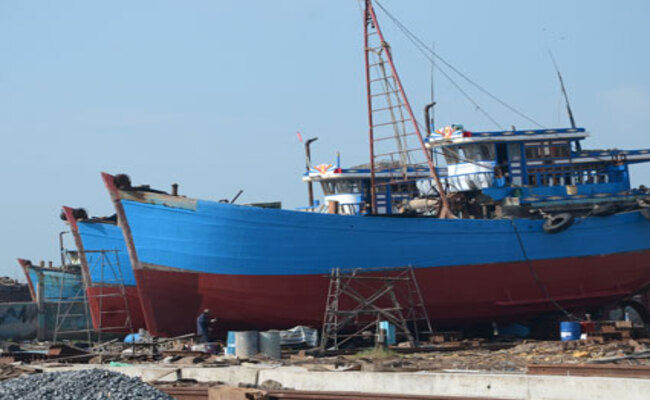
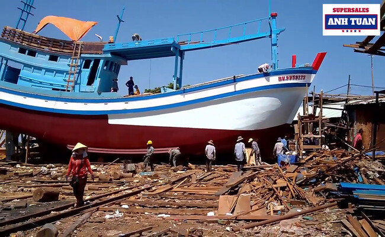
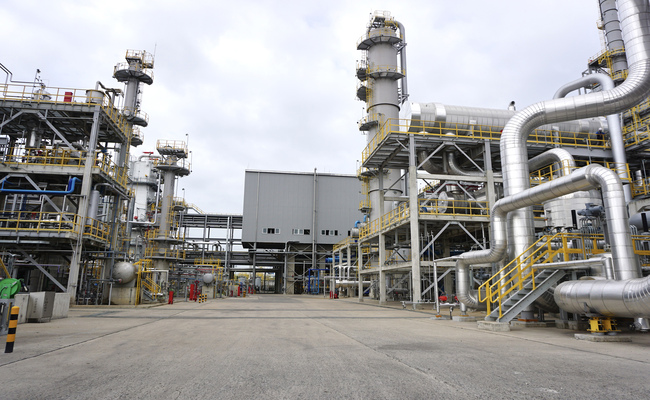
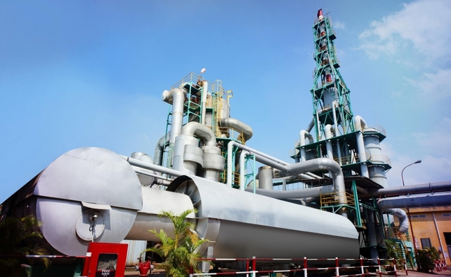
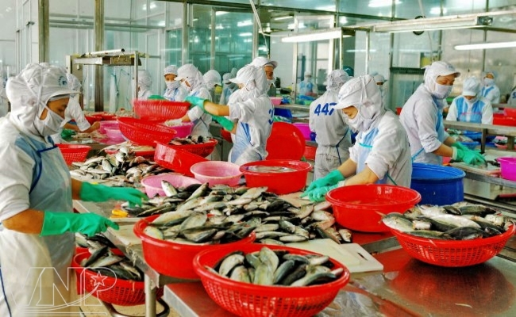
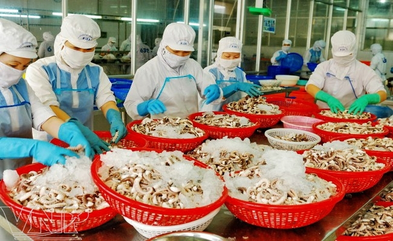

1. Khai thác dầu khí
-Tỉnh BR-VT có chiều dài bờ biển hơn 305km, trên 100.000km2 thềm lục địa với trữ lượng khoảng 400 triệu
m3 dầu (chiếm 93,29% trữ lượng cả nước) và khoảng trên 100 tỉ m3 khí (chiếm 16,2% trữ lượng cả nước), là
tỉnh đứng đầu cả nước về lĩnh vực khai thác dầu khí, bên cạnh các thế mạnh khác như vận tải hàng hải,
dịch vụ du lịch và khai thác hải sản…

-Sự ra đời và phát triển của các doanh nghiệp dầu khí gắn liền với quá trình hình thành và phát triển
ngành công nghiệp dầu khí ở Đặc khu Vũng Tàu - Côn Đảo trước đây, tỉnh BR-VT ngày nay. Hoạt động dầu khí
đã có tác động lan tỏa mạnh mẽ, tạo điều kiện thúc đẩy kinh tế - xã hội BR-VT phát triển không ngừng.
-Hiện nay, ở BR-VT đã hình thành và phát triển ngành năng lượng, đạm - hóa chất, công nghiệp khí đốt,
sản xuất và cung ứng hóa phẩm dầu khí, đóng mới giàn khoan, sửa chữa tàu biển, dịch vụ cảng biển và kho
bãi...

-Một số doanh nghiệp dầu khí đã đóng góp đáng kể vào tỷ lệ gia tăng giá trị công nghiệp và dịch vụ của
BR-VT :
+ Liên doanh Việt - Nga Vietsovpetro
+ Tổng công ty Khí Việt Nam - CTCP (PV GAS)
+ Tổng công ty CP Dịch vụ Kỹ thuật Dầu khí (PTSC)
+ Tổng công ty CP Khoan và Dịch vụ khoan Dầu khí (PV Drilling)
+ Nhà máy Đạm Phú Mỹ
+ Công ty CP Chế tạo giàn khoan Dầu khí (PV Shipyard)
- Đây là những nhân tố quan trọng đưa BR-VT trở thành tỉnh có quy mô kinh tế lớn trong vùng.
2. Công nghiệp đóng tàu thuyền

- Mặc dù thị trường đóng tàu trong nước cũng như thế giới đang trải qua những gia đoạn trầm lắng nhất,
số lượng đóng mới cũng như sửa chữa sụt giảm nghiệm trọng do ảnh hưởng của kinh tế thế giới, nhưng vẫn
còn nhiều cơ hội tích cực cho thị trường đóng tàu Việt Nam. Với những tiềm năng sẵn có và đặc biệt là
chính sách từ chính phủ thông qua chiến lược phát triển bền vững kinh tế biển Việt Nam đến năm 2030, tầm
nhìn đến năm 2045 đang mở ra cho Việt Nam nhiều cơ hội phát triển thị trường nội địa cũng như mở rộng
hợp tác với các cường quốc đóng tàu trên thế giới.
- Để phát triển lâu dài và ổn định ngành công nghiệp đóng tàu, các dự án phải cam kết và chứng minh được
những biện pháp tối ưu để bảo vệ môi trường. Tỉnh và các ban ngành luôn tạo mọi điều kiện thuận lợi để
các nhà đầu tư trong và ngoài nước làm ăn hiệu quả khi đầu tư phát triển ngành công nghiệp đóng tàu tại
Bà Rịa - Vũng Tàu

- Một số doanh nghiệp đóng tàu tại tỉnh BR-VT:
+ Công Ty TNHH Dịch Vụ Hàng Hải Trí Tín
( Số 973 Đường 30/4, Phường 11, Thành Phố Vũng Tàu )
+ Sửa Chữa Tàu Biển VMP - Công Ty CP Sửa Chữa Tàu Biển Gia Công Cơ Khí Vũ Minh Phong
(Số 973 Đường 30/4, Phường 11, Thành Phố Vũng Tàu )
+Chi Nhánh Tổng Công Ty Ba Son - Công Ty TNHH MTV
( 98 Nguyễn Thiện Thuật, P. Thắng Nhất, TP. Vũng Tàu )
+Công Ty TNHH Đầu Tư Châu Anh H&T
( Tổ 19, Khu Phố Tân Hạnh, Phường Phú Mỹ, Thị Xã Phú Mỹ )
3. Công nghiệp hóa chất

- Hội tụ nhiều lợi thế trong phát triển cụm ngành công nghiệp hóa chất bao trùm và bền vững, Bà Rịa -
Vũng Tàu đang khai thác tối đa tiềm năng, đẩy mạnh thu hút nhiều “đại bàng” ngành hóa chất trong và
ngoài nước đến đầu tư các dự án quy mô lớn, hiện đại, an toàn theo hướng hóa học xanh và kinh tế tuần
hoàn.
- Công nghiệp hóa chất là một trong những ngành kinh tế quan trọng đóng góp vào tăng trưởng công nghiệp
chế biến, chế tạo của tỉnh Bà Rịa - Vũng Tàu 10 năm qua, chỉ xếp sau 2 ngành chế biến nông lâm thủy sản
và luyện kim. Quan điểm của tỉnh là hình thành Khu Công nghiệp hóa chất chuyên sâu, các tổ hợp công
nghiệp hóa chất với quy mô lớn hiện đại, an toàn theo hướng hóa học xanh và kinh tế tuần hoàn. Tạp chí
Công Thương vừa có cuộc trao đổi với ông Nguyễn Văn Đồng - Giám đốc Sở Công Thương tỉnh Bà Rịa - Vũng
Tàu về vấn đề này.

- Một số doanh nghiệp nổi bật tại BR-VT :
+ Công Ty CP Việt Mỹ Vũng Tàu
(Số Nhà 46-48 Lê Duẩn, P. Phước Trung, TP. Bà Rịa)
+Hóa Chất Quang Ngọc Diệp - Công Ty TNHH Quang Ngọc Diệp
(Tổ 6, KP. Phước Hưng, P. Mỹ Xuân, TX. Phú Mỹ)
+Thuận Phong - Công Ty TNHH Thuận Phong
(159 Bình Giã, P. 8, Tp. Vũng Tàu)
+Công Ty TNHH Phát Thịnh
(78 Phạm Hồng Thái, P. 7, Tp. Vũng Tàu)
+Công Ty TNHH SX TM DV Tân Thành Phát
(QL 51 Phước Hưng, Xã Mỹ Xuân, Huyện Tân Thành)
4. Công nghiệp chế biến thủy hải sản
- Bà Rịa-Vũng Tàu là tỉnh ven biển, với lợi thế diện tích mặt nước lớn, rất thích hợp cho việc nuôi
trồng thủy sản có giá trị kinh tế cao. Những năm qua, phát triển ngành nuôi trồng thủy sản không chỉ có
khả năng tạo ra đột phá kinh tế, góp phần tạo nguồn cung nguyên liệu ổn định cho xuất khẩu thủy sản, mà
còn giúp giảm áp lực trong khai thác thủy sản xa bờ.

- Trong những năm qua, nghề nuôi trồng thủy sản trên địa bàn tỉnh Bà Rịa-Vũng Tàu đã tăng lên nhanh
chóng. Cụ thể, nếu như năm 1991 diện tích nuôi trồng thủy sản trên địa bàn tỉnh chưa tới 2.000 ha, thì
đến nay diện tích nuôi đã đạt hơn 7.200 ha. Trong số đó, 4.492 ha nuôi thủy sản nước mặn và nước lợ, với
sản lượng đạt hơn 11.000 tấn/năm, còn lại là nuôi nước ngọt. Giá trị sản phẩm bình quân trên 1 ha mặt
nước nuôi trồng thủy sản năm 2020 ước đạt 214 triệu đồng, gấp 2 lần so với năm 2010.
- Trên địa bàn tỉnh hiện có 121 doanh nghiệp và 268 cơ sở sản xuất nhỏ lẻ hoạt động sơ chế, chế biến
thủy sản với tổng công suất trung bình 250.000 tấn thành phẩm/năm. Các mặt hàng chế biến chủ yếu như: cá
biển, mực, bạch tuộc, cua ghẹ đông lạnh, surimi, seafood mix (từ mực, bạch tuộc, tôm), thủy sản khổ,
nước mắm, bột cá. Trong đó, thủy sản đông lạnh chiếm 74% về giá trị sản xuất và kim ngạch xuất khẩu của
ngành, hàng khô chiếm 20%, còn lại là bột cá và nước mắm. Kim ngạch xuất khẩu đạt 350 triệu USD/năm,
đứng thức 3 trên tổng kim ngạch xuất khẩu các mặt hàng của tỉnh.

- Các doanh nghiệp nổi bật tỉnh BR-VT:
+Công Ty TNHH Chế Biến Thủy Sản Đức Danh
(Tổ 27, Ấp Phước Lâm, Xã Phước Hưng, Huyện Long Điền)
+Thủy Sản Hòa Thắng - Công Ty TNHH Thủy Sản Hòa Thắng
(Khu Chế Biến Hải Sản Tập Trung, Ấp An Hải, X. Lộc An, H. Đất Đỏ)
+Baseafood - Công Ty CP Chế Biến XNK Thủy Sản Tỉnh Bà Rịa Vũng Tàu
(Số 2, Trưng Trắc, P. 1, TP. Vũng Tàu)
+Công Ty TNHH DIAMOND AGE
(1743 Võ Nguyên Giáp, P. 12, TP. Vũng Tàu)
+Công Ty TNHH Ngọc Tùng
(1589 Đường 30 Tháng 4, P. 12, TP. Vũng Tàu)
+Chả Mực Hạ Long Khang Duy
(285 Nguyễn An Ninh, P. Thắng Nhì, TP. Vũng Tàu)
+Công Ty Cổ Phần Thủy Sản Và Xuất Nhập Khẩu Côn Đảo (COIMEX)
(Số 40 Lê Hồng Phong, P. 4, Tp. Vũng Tàu)